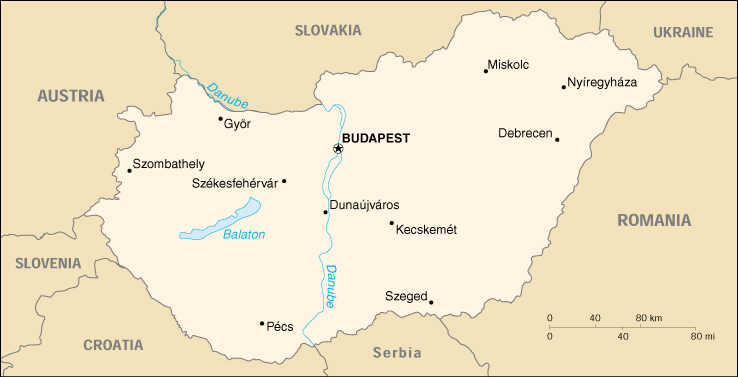

{kind=link}


| Hungary |
|
|  | |
| Introduction |
Background: Hungary was part of the polyglot Austro-Hungarian Empire, which collapsed in World War I. It fell under communist rule following World War II. A revolt in 1956 and an announced withdrawal from the Warsaw Pact was met with massive military intervention by Moscow. In the more open GORBACHEV years, Hungary led the movement to dissolve the Warsaw Pact and steadily shifted toward multiparty democracy and a market-oriented economy. Following the collapse of the USSR in 1991, Hungary developed close political and economic ties to Western Europe. It joined NATO in 1999 and is a frontrunner in a future expansion of the EU.
| Geography |
Location: Central Europe, northwest of Romania
Geographic coordinates: 47 00 N, 20 00 E
Map references: Europe
Area:
total:
93,030 sq km
land:
92,340 sq km
water:
690 sq km
Area - comparative: slightly smaller than Indiana
Land boundaries:
total:
2,009 km
border countries:
Austria 366 km, Croatia 329 km, Romania 443 km, Serbia and Montenegro 151 km (all with Serbia), Slovakia 515 km, Slovenia 102 km, Ukraine 103 km
Coastline: 0 km (landlocked)
Maritime claims: none (landlocked)
Climate: temperate; cold, cloudy, humid winters; warm summers
Terrain: mostly flat to rolling plains; hills and low mountains on the Slovakian border
Elevation extremes:
lowest point:
Tisza River 78 m
highest point:
Kekes 1,014 m
Natural resources: bauxite, coal, natural gas, fertile soils, arable land
Land use:
arable land:
51%
permanent crops:
3.6%
permanent pastures:
12.4%
forests and woodland:
19%
other:
14% (1999)
Irrigated land: 2,060 sq km (1993 est.)
Environment - current issues: the approximation of Hungary's standards in waste management, energy efficiency, and air, soil, and water pollution with environmental requirements for EU accession will require large investments
Environment - international agreements:
party to:
Air Pollution, Air Pollution-Nitrogen Oxides, Air Pollution-Sulphur 85, Air Pollution-Volatile Organic Compounds, Antarctic Treaty, Biodiversity, Climate Change, Desertification, Endangered Species, Environmental Modification, Hazardous Wastes, Marine Dumping, Nuclear Test Ban, Ozone Layer Protection, Ship Pollution, Wetlands
signed, but not ratified:
Air Pollution-Persistent Organic Pollutants, Air Pollution-Sulphur 94, Antarctic-Environmental Protocol, Law of the Sea
Geography - note: landlocked; strategic location astride main land routes between Western Europe and Balkan Peninsula as well as between Ukraine and Mediterranean basin
| People |
Population: 10,138,844 (July 2000 est.)
Age structure:
0-14 years:
17% (male 878,661; female 834,607)
15-64 years:
68% (male 3,407,368; female 3,535,818)
65 years and over:
15% (male 548,672; female 933,718) (2000 est.)
Population growth rate: -0.33% (2000 est.)
Birth rate: 9.26 births/1,000 population (2000 est.)
Death rate: 13.34 deaths/1,000 population (2000 est.)
Net migration rate: 0.73 migrant(s)/1,000 population (2000 est.)
Sex ratio:
at birth:
1.05 male(s)/female
under 15 years:
1.05 male(s)/female
15-64 years:
0.96 male(s)/female
65 years and over:
0.59 male(s)/female
total population:
0.91 male(s)/female (2000 est.)
Infant mortality rate: 9.15 deaths/1,000 live births (2000 est.)
Life expectancy at birth:
total population:
71.37 years
male:
67 years
female:
76.05 years (2000 est.)
Total fertility rate: 1.25 children born/woman (2000 est.)
Nationality:
noun:
Hungarian(s)
adjective:
Hungarian
Ethnic groups: Hungarian 89.9%, Roma 4%, German 2.6%, Serb 2%, Slovak 0.8%, Romanian 0.7%
Religions: Roman Catholic 67.5%, Calvinist 20%, Lutheran 5%, atheist and other 7.5%
Languages: Hungarian 98.2%, other 1.8%
Literacy:
definition:
age 15 and over can read and write
total population:
99%
male:
99%
female:
98% (1980 est.)
| Government |
Country name:
conventional long form:
Republic of Hungary
conventional short form:
Hungary
local long form:
Magyar Koztarsasag
local short form:
Magyarorszag
Data code: HU
Government type: parliamentary democracy
Capital: Budapest
Administrative divisions: 19 counties (megyek, singular - megye), 20 urban counties* (singular - megyei varos), and 1 capital city** (fovaros); Bacs-Kiskun, Baranya, Bekes, Bekescsaba*, Borsod-Abauj-Zemplen, Budapest**, Csongrad, Debrecen*, Dunaujvaros*, Eger*, Fejer, Gyor*, Gyor-Moson-Sopron, Hajdu-Bihar, Heves, Hodmezovasarhely*, Jasz-Nagykun-Szolnok, Kaposvar*, Kecskemet*, Komarom-Esztergom, Miskolc*, Nagykanizsa*, Nograd, Nyiregyhaza*, Pecs*, Pest, Somogy, Sopron*, Szabolcs-Szatmar-Bereg, Szeged*, Szekesfehervar*, Szolnok*, Szombathely*, Tatabanya*, Tolna, Vas, Veszprem, Veszprem*, Zala, Zalaegerszeg*
Independence: 1001 (unification by King Stephen I)
National holiday: Saint Stephen's Day, 20 August (commemorates the coronation of King Stephen I in 1000 AD)
Constitution: 18 August 1949, effective 20 August 1949, revised 19 April 1972; 18 October 1989 revision ensured legal rights for individuals and constitutional checks on the authority of the prime minister and also established the principle of parliamentary oversight; 1997 amendment streamlined the judicial system
Legal system: rule of law based on Western model
Suffrage: 18 years of age; universal
Executive branch:
chief of state:
President Arpad GONCZ (since 3 August 1990; previously interim president since 2 May 1990)
head of government:
Prime Minister Viktor ORBAN (since 6 July 1998)
cabinet:
Council of Ministers elected by the National Assembly on the recommendation of the president
elections:
president elected by the National Assembly for a five-year term; election last held 19 June 1995 (next to be held before August 2000); prime minister elected by the National Assembly on the recommendation of the president
election results:
Arpad GONCZ reelected president; a total of 335 votes were cast by the National Assembly, Arpad GONCZ received 259; Viktor ORBAN elected prime minister; percent of legislative vote - NA
Legislative branch:
unicameral National Assembly or Orszaggyules (386 seats; members are elected by popular vote under a system of proportional and direct representation to serve four-year terms)
elections:
last held on 10 and 24 May 1998 (next to be held May/June 2002)
election results:
percent of vote by party (5% or more of the vote required for parliamentary representation in the first round) - MSZP 32.0%, FIDESZ 28.2%, FKGP 13.8%, SZDSZ 7.9%, MIEP 5.5%, MMP 4.1%, MDF 2.8%, KDNP 2.3%, MDNP 1.5%; seats by party - MSZP 134, FIDESZ 148, FKGP 48, SZDSZ 24, MDF 17, MIEP 14, independent 1; note - the MDF won 17 single-member district seats; seating as of 1999 by party - MSZP 135, FIDESZ 146, FKGP 48, SZDSZ 24, MDF 17, MIEP 12, independents 3, and 1 empty seat to be filled in a byelection
Judicial branch: Constitutional Court, judges are elected by the National Assembly for nine-year terms
Political parties and leaders: Alliance of Free Democrats or SZDSZ [Balint MAGYAR, chairman]; Christian Democratic People's Party or KDNP [Gyorgy GICZY, president]; Hungarian Civic Party or FIDESZ [Laszlo KOVER, chairman]; Hungarian Democratic Forum or MDF [Ibolya DAVID, chairman]; Hungarian Democratic People's Party or MDNP [Erzsebet PUSZTAI, chairman]; Hungarian Justice and Life Party or MIEP [Istvan CSURKA, chairman]; Hungarian Socialist Party or MSZP [Laszlo KOVACS, chairman]; Hungarian Workers' Party or MMP [Gyula THURMER, chairman]; Independent Smallholders or FKGP [Jozsef TORGYAN, president]
International organization participation: ABEDA, Australia Group, BIS, CCC, CE, CEI, CERN, EAPC, EBRD, ECE, EU (applicant), FAO, G- 9, IAEA, IBRD, ICAO, ICFTU, ICRM, IDA, IEA, IFC, IFRCS, ILO, IMF, IMO, Inmarsat, Intelsat, Interpol, IOC, IOM, ISO, ITU, NAM (guest), NATO, NEA, NSG, OAS (observer), OECD, OPCW, OSCE, PCA, PFP, UN, UNCTAD, UNESCO, UNFICYP, UNHCR, UNIDO, UNIKOM, UNMIBH, UNMIK, UNOMIG, UNU, UPU, WEU (associate), WFTU, WHO, WIPO, WMO, WToO, WTrO, ZC
Diplomatic representation in the US:
chief of mission:
Ambassador Geza JESZENSZKY
chancery:
3910 Shoemaker Street NW, Washington, DC 20008
telephone:
[1] (202) 362-6730
FAX:
[1] (202) 966-8135
consulate(s) general:
Los Angeles and New York
Diplomatic representation from the US:
chief of mission:
Ambassador Peter F. TUFO
embassy:
V. 1054 Szabadsag Ter 12, Budapest
mailing address:
pouch: American Embassy Budapest, Department of State, Washington, DC 20521-5270
telephone:
[36] (1) 475-4400, 475-4703 (after hours)
FAX:
[36] (1) 475-4764
Flag description: three equal horizontal bands of red (top), white, and green
| Economy |
Economy - overview: Hungary continues to demonstrate strong economic growth and to work toward accession to the European Union. Over 85% of the economy has been privatized. Foreign ownership of and investment in Hungarian firms has been widespread with cumulative foreign direct investment $21 billion by 1999. Hungarian sovereign debt is now rated investment grade. GDP growth of 4% in 1999 will likely be matched or even exceeded in 2000. Inflation, while diminished, is still high at 10%. Economic reform measures include regional development, encouragement of small- and medium-size enterprises, and support of housing.
GDP: purchasing power parity - $79.4 billion (1999 est.)
GDP - real growth rate: 4% (1999 est.)
GDP - per capita: purchasing power parity - $7,800 (1999 est.)
GDP - composition by sector:
agriculture:
5%
industry:
30%
services:
65% (1999 est.)
Population below poverty line: 25.3% (1993 est.)
Household income or consumption by percentage share:
lowest 10%:
4.1%
highest 10%:
24% (1993)
Inflation rate (consumer prices): 10% (1999 est.)
Labor force: 4.2 million (1997)
Labor force - by occupation: services 65%, industry 27%, agriculture 8% (1996)
Unemployment rate: 10% (1999 est.)
Budget:
revenues:
$13.5 billion
expenditures:
$15.1 billion, including capital expenditures of $NA (1999 est.)
Industries: mining, metallurgy, construction materials, processed foods, textiles, chemicals (especially pharmaceuticals), motor vehicles
Industrial production growth rate: 6% (1999 est.)
Electricity - production: 35.104 billion kWh (1998)
Electricity - production by source:
fossil fuel:
61%
hydro:
1%
nuclear:
38%
other:
0% (1999 est.)
Electricity - consumption: 33.317 billion kWh (1998)
Electricity - exports: 3.3 billion kWh (1998)
Electricity - imports: 3.97 billion kWh (1998)
Agriculture - products: wheat, corn, sunflower seed, potatoes, sugar beets; pigs, cattle, poultry, dairy products
Exports: $22.6 billion (f.o.b., 1999)
Exports - commodities: machinery and equipment 51.9%, other manufactures 32.7%, agriculture and food products 10.5%, raw materials 2.9%, fuels and electricity 1.9% (1998)
Exports - partners: Germany 37%, Austria 11%, Italy 6%, Netherlands 5% (1998)
Imports: $25.1 billion (f.o.b., 1999)
Imports - commodities: machinery and equipment 46.5%, other manufactures 40.2%, fuels and electricity 6.6%, agricultural and food products 3.7%, raw materials 3.0% (1998)
Imports - partners: Germany 28%, Austria 10%, Italy 8%, Russia 7% (1998)
Debt - external: $27 billion (1999)
Economic aid - recipient: $122.7 million (1995)
Currency: 1 forint (Ft) = 100 filler
Exchange rates: forints per US$1 - 251.150 (January 2000), 237.146 (1999), 214.402 (1998), 186.789 (1997), 152.647 (1996), 125.681 (1995)
Fiscal year: calendar year
| Communications |
Telephones - main lines in use: 1.893 million (1995)
Telephones - mobile cellular: 1.269 million (1995)
Telephone system:
the telephone system has been modernized and is capable of satisfying all requests for telecommunication service
domestic:
the system is digitalized and highly automated; trunk services are carried by fiber-optic cable and digital microwave radio relay; a program for fiber-optic subscriber connections was initiated in 1996; heavy use is made of mobile cellular telephones
international:
Hungary has fiber-optic cable connections with all neighboring countries; the international switch is in Budapest; satellite earth stations - 2 Intelsat (Atlantic Ocean and Indian Ocean regions), 1 Inmarsat, 1 very small aperture terminal (VSAT) system of ground terminals
Radio broadcast stations: AM 17, FM 57, shortwave 3 (1998)
Radios: 7.01 million (1997)
Television broadcast stations: 39 (plus several low-power stations) (1997)
Televisions: 4.42 million (1997)
Internet Service Providers (ISPs): 13 (1999)
| Transportation |
Railways:
total:
7,606 km
broad gauge:
36 km 1.524-m gauge
standard gauge:
7,394 km 1.435-m gauge (2,270 km electrified; 1,236 km double track)
narrow gauge:
176 km 0.760-m gauge (1998)
note:
Hungary and Austria jointly manage the cross-border standard-gauge railway between Gyor, Sopron, Ebenfurt (Gysev railroad) a distance of about 101 km in Hungary and 65 km in Austria
Highways:
total:
188,203 km
paved:
81,680 km (including 438 km of expressways)
unpaved:
106,523 km (1998 est.)
Waterways: 1,373 km permanently navigable (1997)
Pipelines: crude oil 1,204 km; natural gas 4,387 km (1991)
Ports and harbors: Budapest, Dunaujvaros
Merchant marine:
total:
2 ships (1,000 GRT or over) totaling 12,949 GRT/14,550 DWT
ships by type:
cargo 2 (1999 est.)
Airports: 43 (1999 est.)
Airports - with paved runways:
total:
16
over 3,047 m:
2
2,438 to 3,047 m:
8
1,524 to 2,437 m:
4
914 to 1,523 m:
1
under 914 m:
1 (1999 est.)
Airports - with unpaved runways:
total:
27
2,438 to 3,047 m:
3
1,524 to 2,437 m:
5
914 to 1,523 m:
12
under 914 m:
7 (1999 est.)
Heliports: 5 (1999 est.)
| Military |
Military branches: Ground Forces, Air Force, Border Guard
Military manpower - military age: 18 years of age
Military manpower - availability:
males age 15-49:
2,588,365 (2000 est.)
Military manpower - fit for military service:
males age 15-49:
2,062,565 (2000 est.)
Military manpower - reaching military age annually:
males:
67,160 (2000 est.)
Military expenditures - dollar figure: $732.2 million (FY99)
Military expenditures - percent of GDP: 1.4% (FY99)
| Transnational Issues |
Disputes - international: ongoing Gabcikovo Dam dispute with Slovakia
Illicit drugs: major transshipment point for Southwest Asian heroin and cannabis and transit point for South American cocaine destined for Western Europe; limited producer of precursor chemicals, particularly for amphetamines and methamphetamines